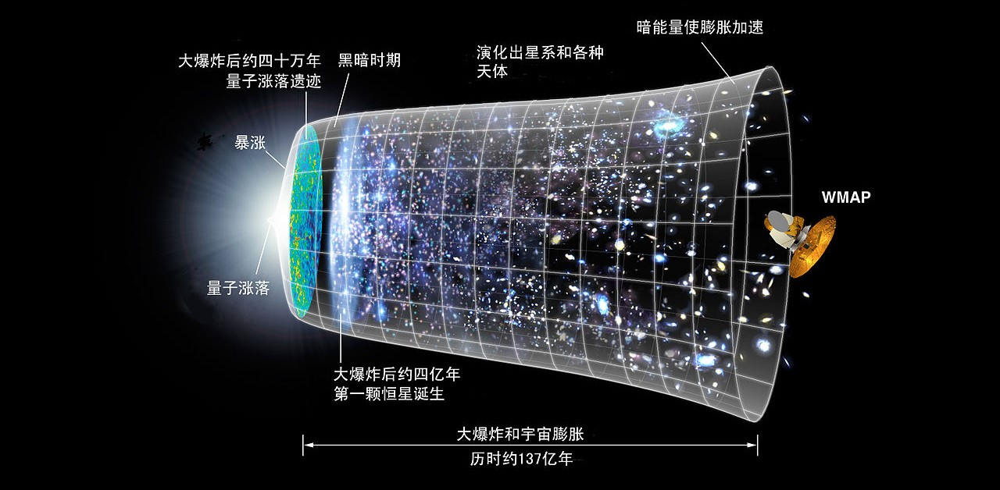

星系与宇宙
“现在存在的一切、过去存在的一切与未来存在的一切”
宇宙
What is the universe?
宇宙是所有时间、空间与其包含的内容物所构成的统一体；它包含了行星、恒星、星系、星系际空间、次原子粒子以及所有的物质与能量，宇指空间，宙指时间。
习惯上，宇宙定义为“现在存在的一切、过去存在的一切与未来存在的一切。”根据人们目前的理解，宇宙包含三种连续体：时空、能量型态（包含电磁波与物质）以及相关的物理定律。宇宙也包括所有的生命、所有的历史，甚至部分哲学家与科学家认为还包含数学等所有的思想。
可观测宇宙
Where are we?
可观测宇宙（observable universe）是一个以观测者作为中心的球体空间，小得足以让观测者观测到该范围内的物体，也就是说物体发出的光有足够时间到达观测者。
截至2013年对宇宙年龄最精确的估计是137.98±0.37 亿年。但由于宇宙的膨胀，可观测宇宙的半径并不是固定的138亿光年，人类所观测的古老天体当前的距离比起其原先的位置要遥远得多（以固有距离（proper distance）来衡量，固有距离在现在的时点和同移距离是相等的）。现在推测可观测宇宙半径约为465亿光年，直径约为930亿光年。
.jpg)
我们的位置：
地球———太阳系———银河系———太阳系临近星系空间
本星系群———室女座超星系团———邻近的超星系团———可观测宇宙
星云
星云（源自拉丁文的：nebulae或nebulæ，与ligature或nebulas，意思就是“云”）是尘埃、氢气、氦气、和其他电离气体聚集的星际云。
原本是天文学上通用的名词，泛指任何天文上的扩散天体，包括在银河系之外的星系。
（图为巨蛇座鹰星云，（M16，NGC 6611，也称为星之皇后星云））
宇宙时间表
在第一阶段，最早的宇宙是炙热、充满活力，那里即使有粒子存在或可能存在，也只是短暂的。根据目前的科学理论，我们现在周围看见的各种不同的力，在这个时候是结合在一起的统一力。

在第二阶段，宇宙进一步冷却生成夸克-胶子等离子体，当前我们知道的基本力经由更多的对称性破缺逐渐生成，尤其是电弱对称性破缺 －和我们今天看到我们周围复杂复合分子的完整范围变得可能，导致重力主导的宇宙、第一批的中性原子（～80%是氢）和今天我们检测到的宇宙微波背景辐射。
在短暂的黑暗之后，第三阶段开始，宇宙大尺度的稳定结构出现。目前我们所知的基本粒子和力，如最早的恒星、类星体、星系、星系团和超星系团发展出来，创造出我们今天看到的宇宙。
对于未来，科学家预测大约在10亿年后地球将不再能支援生命，50亿年后将笼罩在极度膨胀的太阳之下。在更长的时间尺度，当恒星最终步入死亡而少有新的恒星诞生来取代它们。布满恒星时期将结束，并通往一个黑暗的宇宙。